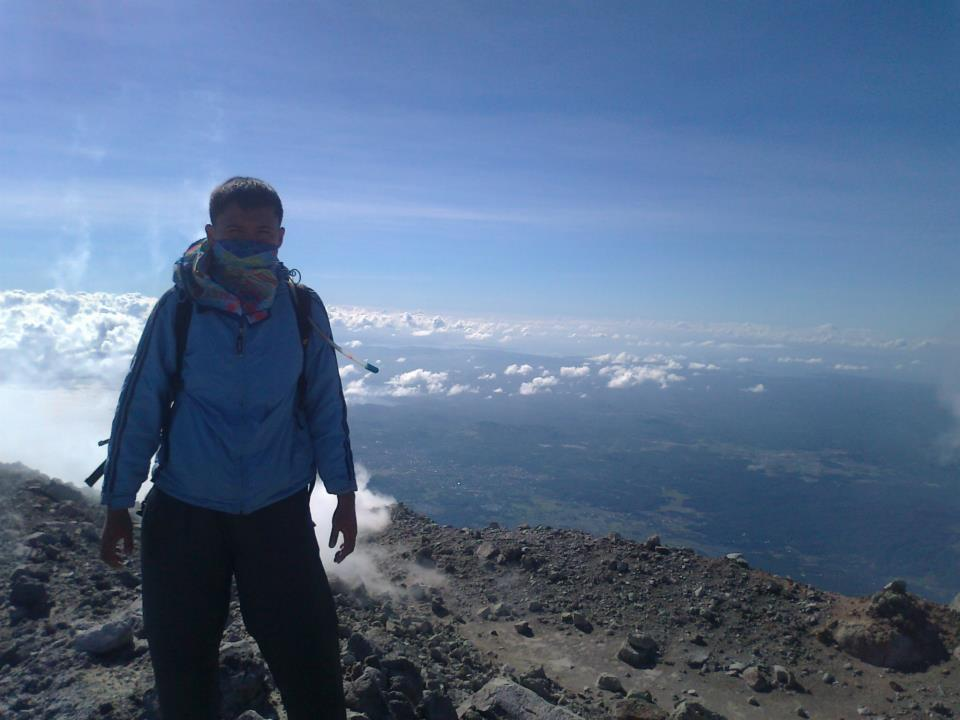
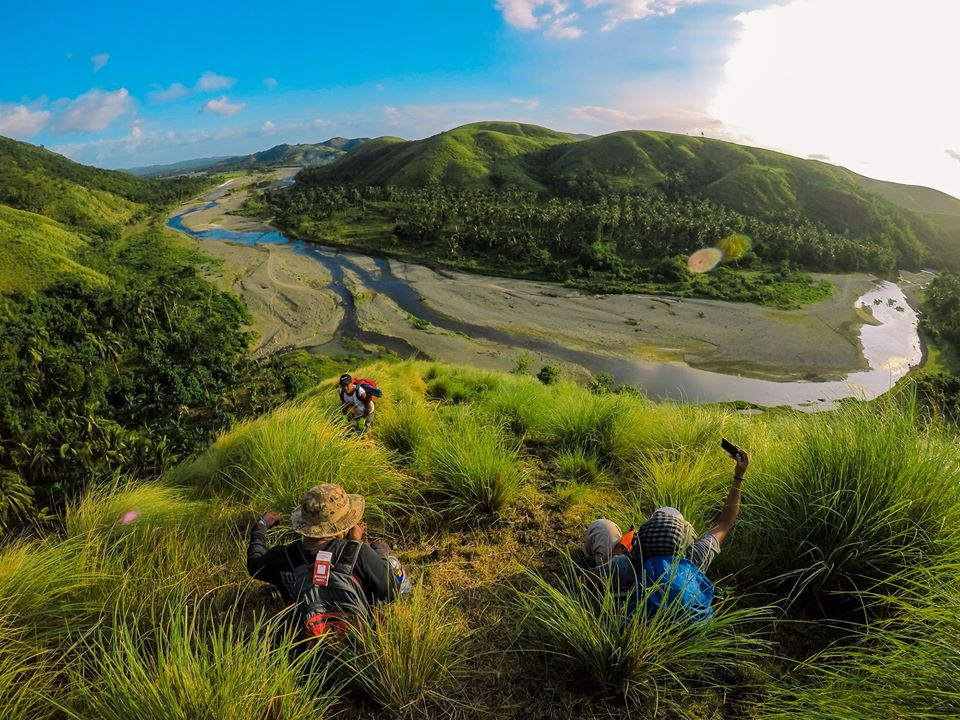

Tread the volcanic paths of the world's most perfect cone. From lush forests to rocky lava fields, experience the raw beauty of Mayon up close.

The hiking trails around Mayon Volcano offer a diverse range of trekking experiences, from beginner-friendly walks to challenging climbs. Adventurers can explore unique volcanic landscapes, discover endemic flora, and witness breathtaking vistas of the Bicol peninsula.

Originally forged by local farmers and mountain guides, these trails have evolved into world-class trekking routes. Today, they are carefully monitored and maintained to ensure that tourism remains sustainable while providing a safe way to explore the volcano's foothills.
Important trekking information.
Prepare for the mountain weather.
Maximize your trek experience.
Always Leave No Trace. Whatever you pack in, make sure you pack it out!